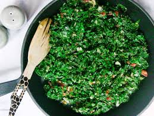

HOME
SUKUMA WIKI

Description:
Collard greens from Kenya
Ingredients:
- 1 bunch of kayle
- 2 tbl spoons of cooking oil
- 1 large onion
- 2 tomatoes
Steps:
-
Wash the kale thoroughly remove the thick stems and slice the leaves
into thin uniform strips.
- Heat oil in a large pan over medium high heat.
- Add the diced onions and cook until soft and slightly golden.
-
Add diced tomatoes and cook until they are soft and turn to paste.
- Add the sliced kayle to the pan with the tomato-onion mixture.
-
Cook for 5 minutes stiring frequently until the leaves turn tender but
are still bright green.